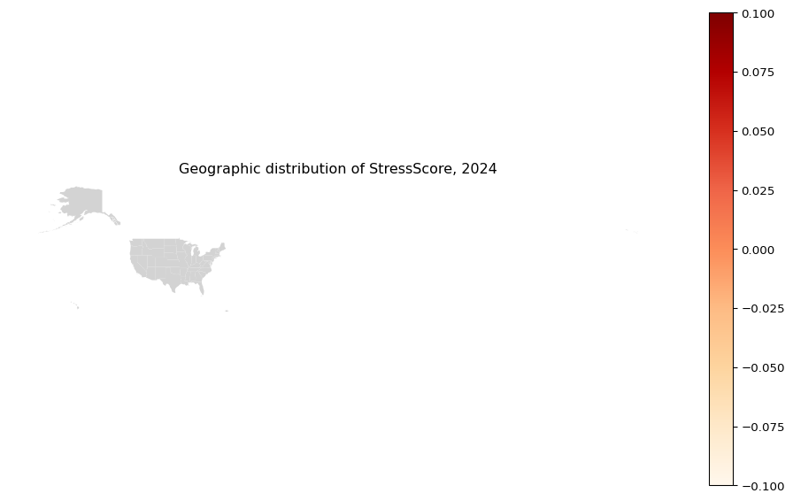

Final Project: Financial News Sentiment & FDIC Banking Stress
Project Information
- Group members: Songyi Huang, Jiayu Zhao, Yicheng Liu
- Lecture section time: section4 and section2
- GitHub usernames: @songyihuang, @jiayuzhao05, @Glu147
Overview
This project asks:
- Can LLM-derived sentiment signals from financial news predict deteriorations in state-level banking fundamentals (FDIC)?
- Do sentiment indicators provide earlier or stronger signals than traditional FDIC fundamentals (e.g., ROA/NIM)?
- Are stress reactions geographically concentrated across US states?
Research Questions
This project studies whether regulatory-finance news sentiment contains useful early warning signals for banking stress at the US state-year level.
- Predictive signal: Is a higher share of negative regulatory-news sentiment associated with worse banking outcomes (especially lower next-period ROA)?
- Incremental value: Does sentiment improve stress identification when used together with FDIC fundamentals such as lagged ROA, NIM, and balance-sheet growth?
- Spatial concentration: Are model-implied stress levels clustered in particular states, suggesting uneven geographic vulnerability?
Data
- News/regulatory text:
raw_partner_headlines.csv(filtered to regulatory keywords; scored with a lightweight sentiment model) - Banking fundamentals: FDIC state-year aggregates (e.g.,
Summary_data_states.csv) - Geography: US state boundaries (Census shapefile; used for choropleth map)
Folder conventions
- Raw inputs go in
data/raw-data/ - Derived/clean tables go in
data/derived-data/
Data & Methods
All of the processing, merging, and reshaping for this project is handled directly in this .qmd file via Python code chunks. The helper module preprocessing.py exposes reusable functions (for presentation slides and the Streamlit app), but the core wrangling logic is executed here.
Method summary:
- Load FDIC state-year data and construct derived features such as
ROA,DROA, lagged controls, and stress labels (bad_year,severity). - Train a lightweight TF-IDF + logistic-regression sentiment model using the labeled financial text corpus.
- Score filtered regulatory-news headlines and aggregate sentiment to the year level.
- Merge yearly sentiment with FDIC panel data.
- Construct a simple composite stress index
StressScore = bad_year × severityfor visualization.
Build state–year panel from raw data
Load FDIC state–year aggregates from Summary_data_states.csv and construct ROA, ΔROA, and related fundamentals.
Train a lightweight sentiment model on the labeled news dataset and aggregate headline sentiment to the year level. To make this chunk self-contained (so it works even if run independently), we reload the FDIC panel to determine the relevant year range.
Merge the FDIC panel with the yearly sentiment index and construct a simple composite stress index StressScore that combines the binary bad-year label with the magnitude of ROA deterioration.
Results
Static Plot 1: Sentiment vs ΔROA scatter
We first show how regulatory-news negativity relates to changes in ROA at the state–year level using an Altair scatter plot.
Interpretation: higher sent_neg_share generally aligns with weaker DROA, supporting Research Questions 1 and 2.
Static Plot 2 (Spatial): US map of stress indicators
Next we map the StressScore across US states using Altair. We focus on the most recent year available in the panel.

Interpretation: darker states indicate higher stress, showing geographic concentration relevant to Research Question 3.
Streamlit App
The Streamlit app lives in streamlit-app/. See README.md for how to run it locally. The deployed version is available on Streamlit Community Cloud at https://final-project-ppha30538-r9vojv7vvmmmqehe82uikv.streamlit.app/.
The app is designed to support the writeup in three ways:
- Exploration: users can inspect sentiment and banking-stress indicators interactively instead of relying only on static snapshots.
- Cross-checking: users can compare patterns seen in the static figures with additional years or states in an interactive view.
- Communication: the app provides an accessible interface for explaining how sentiment features and FDIC fundamentals jointly inform the stress signal.
Limitations
- The project guidelines discourage state-level analysis in favor of more disaggregated data. We use state-year aggregation here because the FDIC “Summary of Results” and publicly available regulatory-news datasets are most readily available at this level; finer-grained (e.g., bank-level) data would require different sources and access.
- The headline source used for yearly sentiment may be incomplete in this repository snapshot; when missing, sentiment aggregates are unavailable.
- The modeling strategy is intentionally lightweight and does not establish causal effects between sentiment and banking outcomes.
- State-year aggregation can hide within-state bank heterogeneity and timing effects at higher frequency (quarterly/monthly).
Policy implications
- Early-warning context:
StressScoreshould be used as a monitoring indicator to prioritize supervisory attention, not as a stand-alone forecast. - Targeted response: when both fundamentals and news sentiment deteriorate in the same states, policymakers can prioritize region-specific interventions.